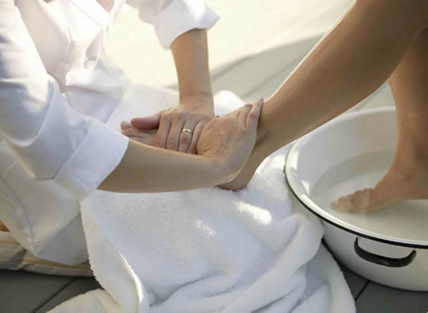
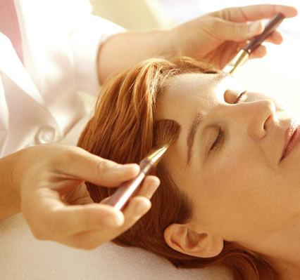
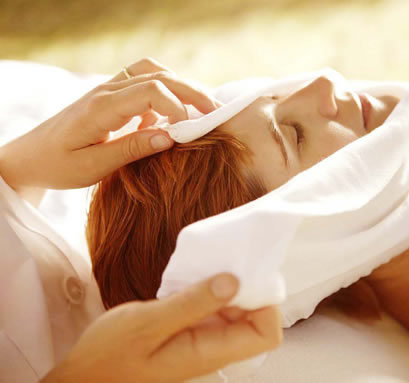
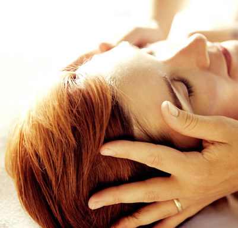
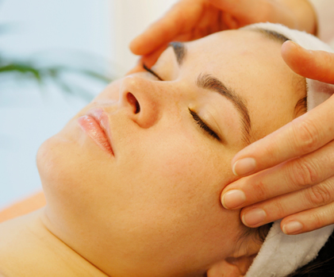
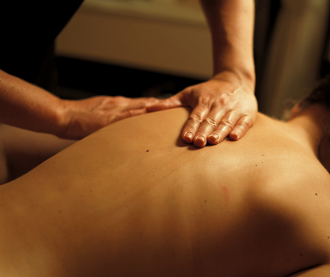

A holistic Dr. Hauschka facial cleanses, clarifies, rejuvenates, and rebalances your skin to its inherent radiance and beauty. It is not an ordinary facial treatment. It will make you feel centered and relaxed; your skin will feel refreshed and radiant long after the actual procedure is over.
The treatment routine is based on special techniques that rebalance and regulate the natural functions of your skin with pure organic and biodynamically grown plant materials. The result will be a healthy and beautifully glowing complexion.
A Dr. Hauschka treatment is not a quick fix that would force change, mask symptoms, or conceal conditions, subjecting your skin into a dependency, undermining the immune system, and making the underlying conditions worse. Instead, a Dr. Hauschka facial begins to reeducate your skin so that it can remember its intrinsic wisdom, enabling it to heal and rejuvenate itself. The Dr. Hauschka products cooperate with your body’s natural rhythms and functions to guide your skin back to glowing health.
All skincare products for home care are available at the studio.

This 2-hour procedure not only beautifies your skin, it also carries you away to a land of absolute relaxation and bliss, totally enveloping you with a feeling of well-being.
After your soothing foot bath, I give you a gentle leg-and-foot and arm-and-hand massage, and I apply warm aromatherapy compresses on your décolleté and face. I cleanse the entire area with fermented grain milk, almond paste, and herbal clay, and I give a rhythmical brush and a press-and-roll hand massage to your face and neck to support the natural flow of lymph.
Based on your skin type, I determine the type of treatment mask, the rhythmitised conditioner, and the moisturizer.
While your mask sinks in, I bathe your eye area in an herbal infusion concocted with eyebright and fennel, specifically to refresh your eyes and tighten both upper and lower eyelids. I apply lip balm not only to nourish your lips but also to moisturize and feed the upper lip area.
This treatment is the climax of pampering skincare.

This 1½-hour treatment not only purifies your complexion but relaxes your whole being. I give you a sage foot bath that draws stress away from your face and head. I soften the facial pores with herbal steam compresses, and I draw out the impurities with therapeutic clay. Any necessary extractions are then very gentle but effective. Detoxification through lymph stimulation follows. A skin-specific conditioner supports the skin's own balancing and healing functions.
The treatment mask that follows results in a radiant complexion that is deeply cleansed and that feels refreshed and renewed.

Impure and inflamed skin will greatly benefit from this 75-minute facial treatment, which draws out impurities and calms inflammation. I apply cleansing clay as well as rhythmic conditioners selected specifically for your skin condition. I gently extract blackheads. The treatment reduces blemishes. I give you a décolleté massage to help you relax. Finally, I prescribe an appropriate day care and suggest a home-care regimen tailored to your skin's needs.

This facial focuses on quieting your mind. You receive a foot bath as well as massage strokes for your legs, feet, arms, hands, and scalp. My rhythmical hand and brush strokes on your facial skin will relax you and strengthen your immune system. The facial mask that I apply specific to your skin condition will nourish your face, and the décolleté massage will soothe your mind and enable you to awaken to renewed energy.

In this 1½-hour refreshing and revitalizing treatment, you first receive a foot bath to ease tension. I apply aromatherapy compresses, deep cleansing, exfoliation, and lymph stimulation to bring out your healthy, glowing complexion. I apply a therapeutic conditioner to jump-start your skin's cell renewal function. This treatment revives, recharges, and restores the natural beauty of your skin.

This treatment is a "facial" for your back. The treatment includes steaming, cleansing, extractions (if necessary), exfoliating, masking, toning, moisturizing--and, of course, a yummy back massage.
One choice starts with a back and shoulder massage. The facial is customized to your individual skin type and needs.
| 30-min. back massage |
$105 |
| 75-min. facial |
Another choice would be:
| 60-min. full-body massage |
$135 |
| 75-min. facial |
With either choice, you will leave with a glowing complexion and an overall sense of well-being.